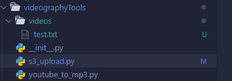

Day in Packagestan
Tickling the Ivories, Not the Ovaries
Technique Training
E Major Chord Progression
- Practiced long-short rhythmic chord progressions
- Practiced short-long rhythmic chord progressions
- Practiced long-short-short-short progression patterns
- Practiced short-short-short-long progression patterns
These exercises helped build finger independence, rhythmic accuracy, and comfort shifting between different hand placements.
Song Learning
"I" by Old Gray
- Confidently performing the full piece with minimal errors
- Focused on maintaining consistent tempo and expressive phrasing
"II" by Old Gray
- Walked through songs entirety with the higher octave hand
- Lower Octave will follow
- Working on mental note recall by subvocalizing each note while playing
Creative Exploration
D Minor Pattern
- Tempo:
♩ = 120BPM (quarter note = 120 beats per minute) - Setup:
- Right hand: place thumb on upper octave D, with fingers on E, F, G, A
- Left hand: mirror the same setup on a lower octave
Execution:
- Right hand:
- Play D repeatedly at 8th note intervals (twice per beat)
- Every half note (2 beats), randomly play a secondary note (E–A) simultaneously with D
- Left hand:
- Mirror the right hand's notes during simultaneous presses
Variation:
- Occasionally switch from the 8th note rhythm to a quarter note rhythm on D
- Interject a different secondary note (A–E) alternating with D
- Left hand mirrors the right-hand rhythm and melody
Result:
- Creates a fast-paced eerie melody in D Minor
Snakety Snake
Managing Imports
Preventing Package Creep
To ensure a Python project runs reliably across multiple machines, it's essential to control and synchronize package dependencies. Without consistency in versions, even a small mismatch can lead to frustrating runtime errors and debugging nightmares.
That’s where virtual environments and standardized dependency files like requirements.txt come in.
Virtual Environments
venv
Advantages:
- Comes pre-installed with Python (from 3.3+), making it lightweight and universally available.
- Offers isolation by creating a local environment scoped to your project.
Disadvantages:
- Limited package management capabilities.
- Lacks built-in support for package resolution and environment locking like
pip-toolsorpoetry.
Best Practices:
- Always create your virtual environment inside a folder like
.venvto keep it clean and standard across systems. - Exclude your virtual environment from source control using
.gitignore. - Activate your environment before running or installing anything:
Integration with requirements.txt:
- Export environment:
- Install from file:
Conda
Advantages:
- Supports binary packages out of the box, great for data science and ML workflows.
- Can manage non-Python dependencies (e.g., OpenCV, CUDA).
Disadvantages:
- Heavier and slower compared to
venvorpip. - Conda environments can bloat if not carefully managed.
Best Practices:
- Use
conda create --name <env> python=3.xto keep environments named and version-pinned. - Maintain environment reproducibility with:
- Always specify channels in your environment files (e.g.,
conda-forge).
Integration with requirements.txt:
- You can convert conda environments to
requirements.txt, but it’s better to rely onenvironment.ymlfor full fidelity. - Still, you can install pip packages inside a conda environment:
UV (UltraFast Virtualenv)
Advantages:
- Blazing-fast dependency resolution and installation.
- Designed as a drop-in replacement for
pip,virtualenv, andpip-tools.
Disadvantages:
- Still relatively new in the ecosystem.
- Limited adoption and tooling support outside of its own ecosystem.
Best Practices:
- Use
uv venvto create a new virtual environment. - Use
uv pip installfor accelerated installs.
Integration with requirements.txt:
- Fully compatible with traditional
requirements.txtworkflows. - Recommended to use
uv pip freeze > requirements.txtfor consistent output.
When Developers Use Different Environment Managers
In collaborative environments, teammates might favor different tools. One might love Conda while another swears by venv.
The common ground? requirements.txt or pyproject.toml.
Key Takeaways:
- Always provide a
requirements.txtto ensure anyone can recreate the environment with pip, regardless of their tool of choice. - Encourage use of
.envmanagers likedirenv,pipx, orvirtualenvwrapperto simplify activation. - Avoid committing installed environments (e.g.,
.venv,env/, orconda/folders) to source control.
Bonus Tip: Consider adopting
pip-toolsorpoetryfor managing dependencies with lock files to guarantee repeatable builds.
Keep your environments lean, your packages locked, and your imports clean. OR ELSE The snakes of Packagestan will HAUNT YOUR DREAMS.
theToolKit Repository
s3_upload.py
Implementation with Async
It is wise to think about the ability to upload many objects to S3 asynchronously. Thus, I am utilizing the aioboto3 Python library in combination with asyncio.
The first day of attempting this implementation has not succeeded. The upload_s3_obj function reaches the first print statement but does not return from either the try or the except block.
I also constructed a bulk_s3_upload function that:
- Grabs all files and file paths from the directory it is called from
- Bundles those files into a list of individual function calls to the async
upload_s3_objfunction - Gathers and runs those tasks using
asyncio.gather()
The bulk_s3_upload currently works as intended for both file gathering and file naming.
Code
import asyncio
import os
import sys
import aioboto3
from boto3.s3.transfer import TransferConfig
sys.path.append(os.path.abspath(os.path.join(os.path.dirname(__file__), "..")))
from utils.files_and_directories import list_files_recursively, move_file
async def upload_s3_obj(file_name: str, s3_path: str) -> str:
bucket_name = os.getenv("S3_BUCKET")
config = TransferConfig(
multipart_threshold=1024 * 8,
max_concurrency=16,
multipart_chunksize=1024 * 16,
use_threads=True,
)
print(f"About to upload file with S3 key: {s3_path}")
try:
async with aioboto3.client(
"s3",
config=aioboto3.session.Config(s3={"use_accelerate_endpoint": True}),
) as s3_client:
# Run the blocking upload_file in a thread to avoid blocking the event loop
await asyncio.to_thread(
s3_client.upload_file,
Filename=file_name,
Bucket=bucket_name,
Key=s3_path,
Config=config,
)
return f"Successfully Uploaded {s3_path}"
except Exception as e:
return f"Failed Upload for {s3_path}: {e}"
async def bulk_s3_upload(s3_path: str) -> list[str]:
dir_path = os.getcwd()
all_files = list_files_recursively(dir_path)
results = []
async def upload_task(file_path: str, s3_path: str):
relative_path = os.path.relpath(file_path, start=dir_path)
s3_key = relative_path.replace(os.sep, "/") # S3 expects forward slashes
s3_key = s3_path + s3_key
result = await upload_s3_obj(file_name=file_path, s3_path=s3_key)
return result
tasks = [upload_task(file_path=file_path, s3_path=s3_path) for file_path in all_files]
results = await asyncio.gather(*tasks)
return results
asyncio.run(bulk_s3_upload(s3_path="test/"))
Test Output
Command Line Output
Target Directory Structure

*How do you catch a squirrel?*
<Simply climb a tree and act like a nut>